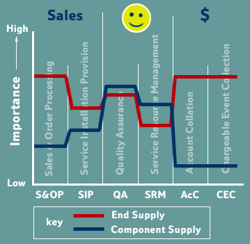

Supply Chain
The incumbent telco is used to owning the whole supply chain; being a one-stop shop for the telecommunications customer. Their operational support systems have been built in accordance with this environment.
Fig 2. Whole Supply Chain
The regulator has taken a machete to this value chain, and now there are many possible supply chains that can exist to meet the customers' requirements. Liberalisation and competition has also increased the number of services from which the customer can choose. This also adds to the variety of commercial relationships that can exist between the incumbent telco and other players with the market.
Fig 3. Segmented Value Chain
The segmentation of the value chain means that players can decide which elements of a service they procure from the incumbent Telco. This has two impacts.
- A new range of commercial relationships along the supply chain now needs to be supported. BT needs to be able to sell from anywhere on the supply chain, rather than just from the end.
- New types of commercial relationships need to be supported, some customers will be using the services as end-customers, others will aggregate the service, others will use the services as a component of a service that they will offer to their customer.
Supply Types and Operational Support
Operational Support infrastructure is required to support the customer relationship. The nature of this support depends on the nature of the relationship. The kind of fault reporting required by a customer using a high-bandwidth connection to deliver a real-time on-line service is different to that required by someone using their telephone line to surf the 'net'.
This difference is not just due to the amount of money each customer spends with the supplier it is also related to what they do with the consumed service, are they an end-user or do they use the service to create a service of their own.
Supply stamps [1,2] are a way to characterise the nature of supply relationships and shows the link between the nature of supply and the nature of the operational support required to enable that relationship to succeed.
Therefore we can see that to support a Component Supply relationship, ie where what we supply is used as a component of another service, Quality Assurance is a key capability. Whereas when supplying the end-customer, billing-related activities take on more importance.

Fig 4. Supply Stamps
This form of modelling helps BT understand the requirements of the operational support systems they require to support these new commercial interfaces. Optimum operational support will enable BT to exploit these new interfaces to its advantage, to help it become the preferred supplier for services.
© Copyright British Telecommunications plc 1999